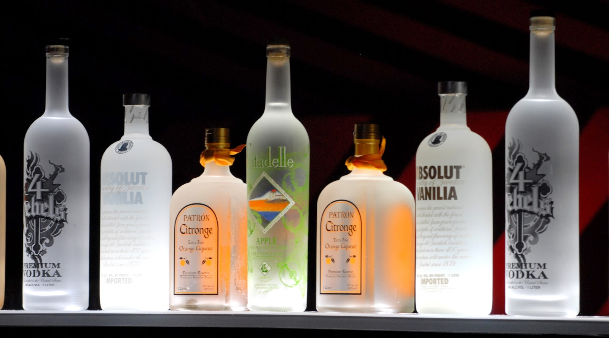

ISABIS.
ISABIS.
REDISCOVER.

BAR Our beautiful cocktail bar rivals any in Shoreditch and Hoxton. It serves classic and modern cocktails, alongside expertly selected wines,craft beers and ciders, all with a real emphasis on British heritage. Our bar menu showcases our bartender’s creativity and seasonal British ingredients where possible, with a twist on classics.We’ve also got a bar snacks menu of deliciously naughty small plates, perfect if you’re popping in for a drink and a bite, or starting your meal off in style. To read more about our bar. ---------------------------------------------------------------------------------------------------------------- Gin Masterclass Our gin masterclass is available on the first Tuesday (1900 – 2030) of every month and the second Saturday (1600 – 1730), for £35 per person. We’ll give you an insight into the complex flavors of gin with a tasting session, a brief history of the spirit, and a chance for you to learn how to make two delicious gin cocktails. With the option of enjoying our chef’s choice menu at the end of your masterclass, it’s the perfect way to spend a Tuesday evening. The gin masterclass, with the addition of the chef’s choice menu, is available for £75 per person.
©copyrights contact us